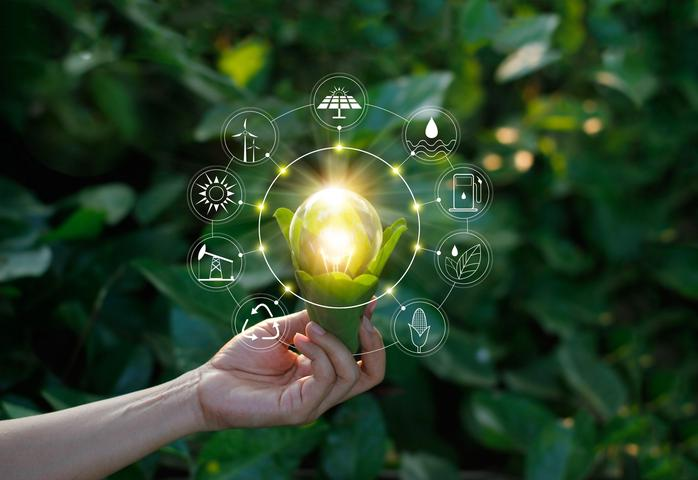
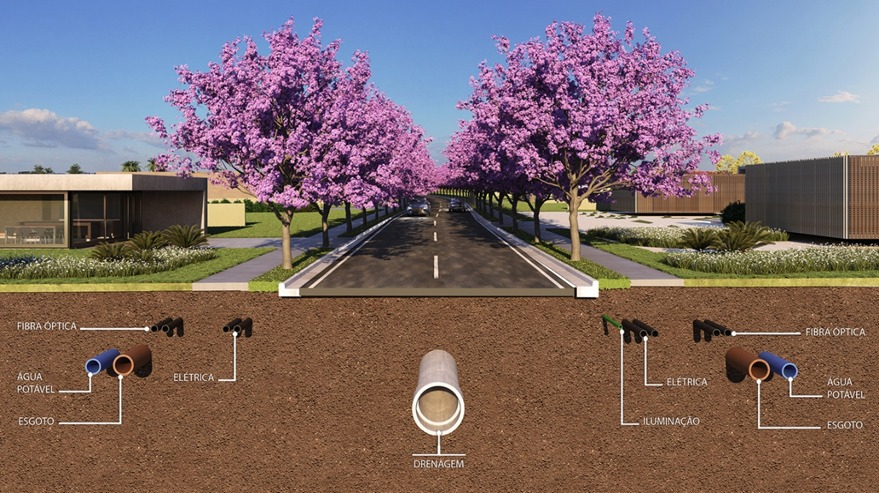

Sustentabilidade
Sustentabilidade na Tecnologia da Informação (TI) refere-se à prática de reduzir o impacto ambiental causado pela produção, uso e descarte de tecnologias de informação e comunicação. A TI é um dos setores que mais contribui para o impacto ambiental, uma vez que utiliza recursos energéticos e materiais em larga escala.
Uso de energias renováveis, virtualização, redução do consumo de energia, reciclagem, utilização de materiais ecológicos, educação e conscientização

A utilização de práticas sustentáveis são responsáveis por diminuição na emissão de CO2 e utilização de materiais biodegradáveis
Desafios em implementar práticas sustentáveis
A instalação de fiação de fibra ótica subterrânea é, inegavelmente, benéfica para o meio-ambiente. Todavia, para a instalação se torna necessário um alto investimento e, principalmente, um projeto bem estruturado para tornar viável a instalação em larga escala.
Para instalar se demanda um projeto bem estruturado, principalmente no que tange a coordenação entre a iniciativa pública e privada. Se torna necessária, também, a cautela para manter serviços subterrâneos pré-existentes, como água/esgoto/esgoto.
